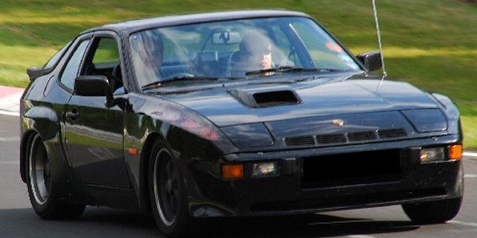
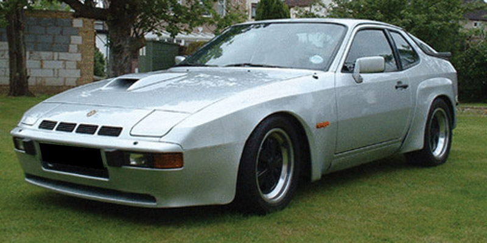
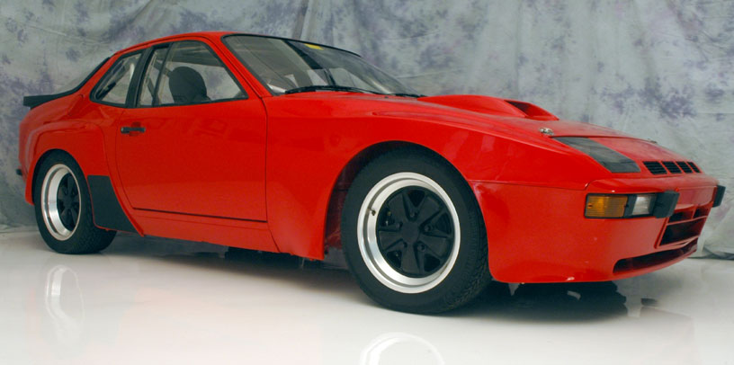
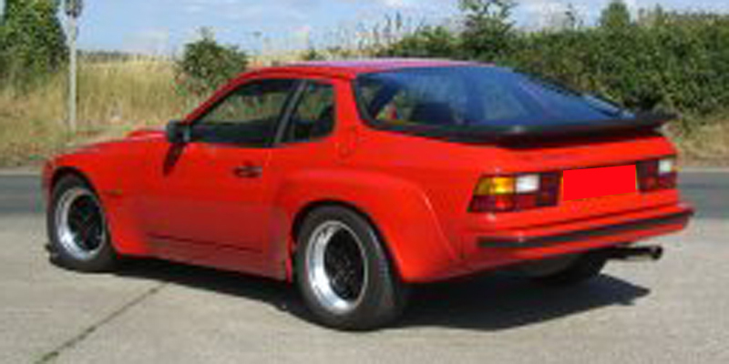
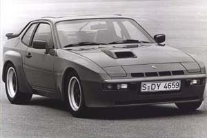

The following sites often have 924 GTs listed. Prices for good quality cars range from €20-40k or equivalent (February 2011). Unloved or project cars (rarely) come onto the market around the €10-15k mark.
Autoscout.fr|  |  |
|  |  |
Identifying a genuine 924 Carrera GT is easy if you know what to look for. If all of the following items are present and correct, you are almost certainly looking at a genuine car. A good initial check is the chassis number, which for a 937 should have the letters 93ZBN7 in it. The clue here is the "7" after the "N", giving 937, which is the 924 GT's Porsche designation. The chassis number code applies to RHD 924 Carrera GTs, even though they are technically Porsche 938s. A Porsche 924 Turbo, designated by Porsche as the 931, will have a "1" after the "N". The GTS was built in Stuttgart rather than Neckarsulm, so it has an "S" in place of the "N" in the chassis number. The "7" is still there but the final numbers should only go up to 59.
The full list of checks, in rough order of priority taking into account importance and ease of location:
|  |
GT chassis numbers WPOZZZ93ZBN700 then 051 to 450 view
GTS chassis numbers WPOZZZ93ZBS700001 to 59
GTs will be black, red, or silver, only red GTSs were made
Polyurethane bonnet scoop, front spoiler, front wings and rear spats
Engine number should start 3150
Langerer & Reich intercooler on top of the engine view
Yellow 924 Carrera GT sticker on the right side of the engine bay view
Black and red pinstripe velour trim, "Turbo" script on kickplate view
Fuchs alloys view
Plastic ducts under the front of the car feeding air to the brakes view
Large crackle effect rear spoiler, red PORSCHE script in the middle
1981 registration, or record of an original "W" reg for UK cars
Transaxle number should start 3103
Rear exhaust/muffler part # 931 111 050 07
Front exhaust/muffler part # 931 111 901 01
84 litre fuel tank
Thinner than standard rear hatch glass
Digital Ignition Timing Computer part number is 937 602 171 00. It is
located behind the stereo
Dogleg first gear location (down and to the left. also found on 931)
Four spoke steering wheel with Porsche script in middle - UK cars only
Full-length panel sunroof (note: lift out only, no tilt/slide function) - UK cars only
Red or black Carrera sticker on front right wing view
Red or black Carrera GT sticker on rear view
NB: Polyurethane (PU) - for those who are not sure - is a flexible plastic. If pressed it will deform quite easily but reform to its original shape. Replica panels are invariably made of glass fibre, which does not have the same flexibility.
Porsche first used polyurethane fenders on the 928, and later for the wheel arch extensions on the 993 GT2. Some car makers use PU on modern car wings such as the Toyota Yaris and Renault Megane. If the brake ducts, yellow CGT sticker, or thinner rear hatch glass are missing, check for crash damage.
Hartech has a good, free, general Porsche buyers guide. Website
Any Porsche garage with front-engined experience will be able to check a 937's mechanical condition, but guaranteeing authenticity could be different without first-hand experience. John Robinson at Peter Morgan in the UK has experience of the 924 Carrera GT. Website